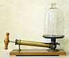

vacuum

Definition: A vacuum is a space devoid of matter. The word is derived from the Latin adjective vacuus for "vacant" or "void". An approximation to such vacuum is a region with a gaseous pressure much less than atmospheric pressure. Physicists often discuss ideal test results that would occur in a perfect vacuum, which they sometimes simply call "vacuum" or free space, and use the term partial vacuum to refer to an actual imperfect vacuum as one might have in a laboratory or in space. In engineering and applied physics on the other hand, vacuum refers to any space in which the pressure is considerably lower than atmospheric pressure. The Latin term in vacuo is used to describe an object that is surrounded by a vacuum.
Source: Wikipedia
Wikipedia Page
Wikidata Page
Occurs in: